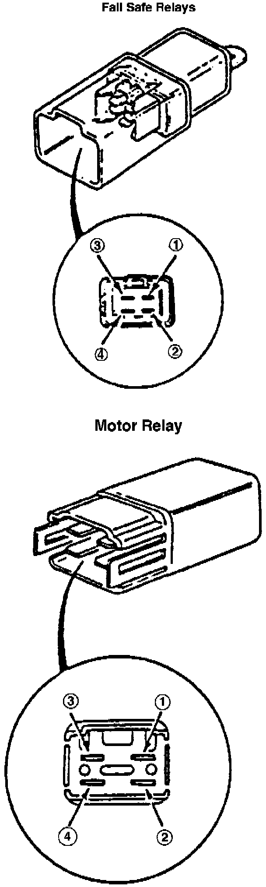

Fail-Safe Relay Motor Diagnosis and Testing
Fig. 87 Fail-Safe/Motor Relays:

1. Check for continuity between relay terminals 3 and 4, Fig. 87. Continuity should not be indicated.
2. Connect 12 volt battery across terminals 1 and 2. Continuity should be indicated between terminals 3 and 4. Replace relay as needed.